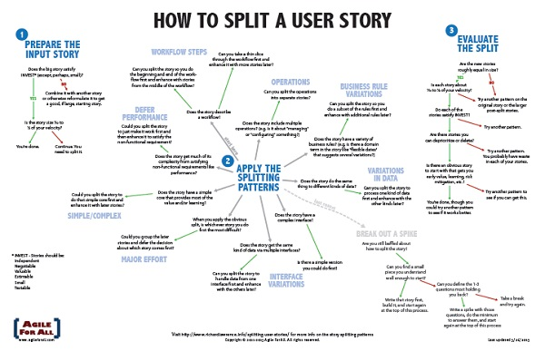
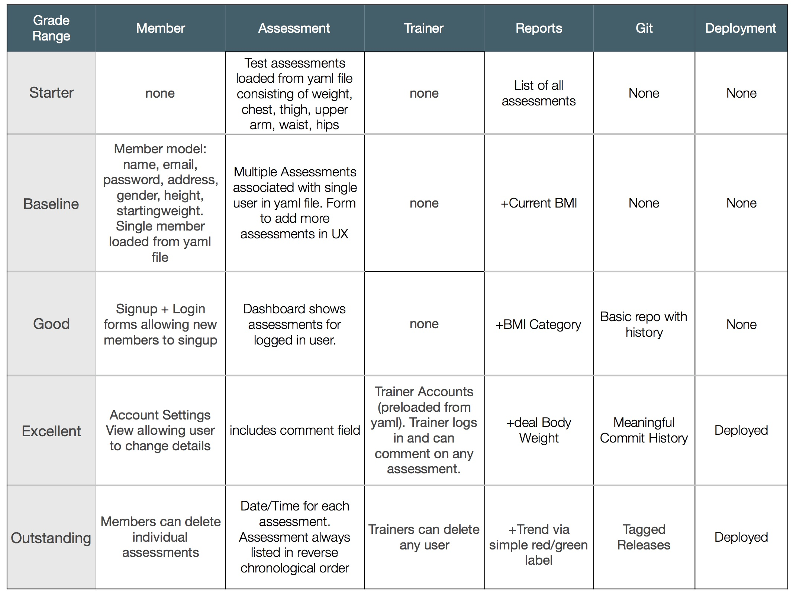

This lab will reinforce some concepts from the talk and prepare you for taking a specification and breaking it into User Stories and small tasks to help you realise them. It will emphasise the importance of small tasks with a view to the overall quality of the solution and will give you a glimpse into how a college assignment can be treated as a real world industry project.
To complement the presentation, some background reading is provided here. This should be viewed as a launchpad into your own Agile journey.
Agile is an umbrella term for a number of methodologies such as Scrum, Lean, Kanban and XP among others. In Red Hat Mobile (RHMAP), we follow a Scrum approach but please note that we use the term Scrum / Agile interchangeably to represent the methodology we are following.
Agile bases itself around a number of principles which are embodied in a document known as the Agile Manifesto. In short it states that we can improve how we work by placing value and emphasis on certain approaches. It states that we value:
The crucial point about this is we place value in the items on the right but we place more value in the items on the left.
Scrum is an Agile framework for completing complex projects. Scrum originally was formalized for software development projects, but it works well for any complex, innovative scope of work. The possibilities are endless. The Scrum framework is deceptively simple and can easily be followed for any project you undertake. This can extend itself to 1 person projects, whereby you can cherry pick the ceremonies that you follow and attempt to follow the principle of the methodology.
Scrum Team The Scrum Team can be made up of individuals from various parts of the organisation. In RHMAP, that includes Engineering, Operations, QA, Support, Technical Writer, Sales, Marketing etc. The Scrum Team is normally put together around the thematic area of work that they are involved in, meaning that the team can change over time depending on what expertise is required within the group. Within a Scrum Team, there are, deliberately, no assigned roles. This is intended to promote the idea that any member of the team is free to take on any piece of work. People with a particular skill set or expertise will naturally gravitate towards the tasks that the feel most comfortable with.
Product Owner The Product Owner control the vision for their product or group. They are focused on understanding business, technical and market requirements, then prioritizing the work to be done by the scrum team accordingly. Typically, there should only be one Product Owner but it can be representatives of various stakeholder groups that the team works with. Ideally the Product Owner should be unbiased and is there to make the right decision for the good of the Product.
Scrum Master Scrum Masters are the champion for scrum within their team. They coach the team, the product owner, and the business on the scrum process and look for ways to fine-tune their practice of it. They are a guiding hand for the team and act as a shield to help protect the team and keep them focused on the work at hand. A main day to day role they play is unblocking a team member if they have an issue and representing the team at wider communication meeting. All of that is designed to optimise the team and ensure that the focus stays on the work at hand. The Scrum Master is not the "leader" of the team - Scrum teams are self organizing. Rather, the Scrum Master is a "Master" of the "Scrum" principles and should be viewed as a facilitator and a coach to help educate the wider team on the principles of the methodology.
Scrum follows a lifecycle consisting of several parts, all wrapped around the concept of a Sprint. A sprint is a timeboxed effort, typically two weeks but no longer than four weeks, which has the potential to deliver something of value or something that is shippable to a customer. Within the timeframe, we commit to trying to complete a certain number of tasks which we aim to complete entirely. All of the following stages of the Agile lifecycle should be attended by the three main roles: Scrum Team, Product Owner and Scrum Master as well as any other interested attendee. However most meetings are optional, so it is ok to miss a meeting on occasion.
The Backlog should constantly be prioritised and any item within the backlog should have an appropriate estimate. To assist with estimates, it is often desirable to break a task down into smaller units, termed SubTasks. Smaller constitute parts are useful for helping to gain a better estimation, as SubTasks help to identify the larger picture required to get a particular issue over the line. However, if these Subtasks are estimated to be more than 2 to 3 days effort, they should be created as stand alone tasks, which can then have SubTasks added to get to a greater level of detail. In that regard it helps derisk the work before it becomes committed to within a Sprint.
With the backlog already in a prioritised state and estimated accordingly, the team meet and decide what should make up the Sprint. The Product Owner will have helped us arrive at this state and is available for any clarification. Typically a Sprint revolves around a Thematic area to help the team focus and allows work to commence on related issues. During planning, the team use the Story Point measure to gauge the complexity of the work they are about to undertake and arrive at the contents of the sprint, guided by that measure. How many story points a team can complete in a given sprint is termed the Velocity and over time it will help the team gauge how much work they can comfortably take on. With that in mind, Sprint Planning should be a very simple mathematical exercise of taking the team velocity and consuming ±10% of that in the coming Sprint. It is sometimes desirable to take on more, and try and establish if the Velocity is accurate. It is sometimes necessary to take on less, if holidays have been booked within the team for example.
After the sprint has concluded, typically on the last day of the sprint, we have a review. During the review we can share with other teams what we achieved. This is an opportunity to demo or showcase the sprint's outputs of the sprint. The audience for that meeting is entirely dependent on the focus of the sprint. It is also a chance for the Product Owner to accept or reject the outcome of the Spint. This is a chance for the team to be held accountable as a defined goal was set out initially and we have now reached a point where that goal is expected to be met. Typically, if the goal is in danger, it should surface well ahead of the Sprint Review. That is the job of the Scrum Master to outwardly project the status of the Sprint so that no surprises occur for Stakeholders on the day.
This is typically the most important stage of the lifecycle. Here we give the members who participated within the Sprint an opportunity to share their experiences in an attempt to positively impact the Agile process that we are following. Typically the format follows a format of sharing:
The Sprint Retrospective is a core pillar of Scrum. As a team we want to constantly learn from our experiences in order to refine and improve how we work as a team. Within Scrum it is known as the principle of do, learn and adapt. As Retrospectives happen after every Sprint, we try and change the format to keep it engaging and to promote discussion and learning. This is also a chance for the team to bond and should be engaging and fun. A website like Fun Retrospectives is a good source of inspiration.
Every day during the sprint we hold a daily standup, which is a strict timeboxed checkpoint for the team. It should be a short, snappy meeting and typically 10-15 mins is the right time frame, otherwise it becomes a burden on the team. This is an opportunity for the team to share their current status and to flag any issues that are blocking them. Three core questions are asked:
Questions 1 and 2 help to distribute the work among the team and ensure that the Sprint is progressing in the correct manner. The third question is very important to alert the team to a potential issue stopping you completing your work. Obviously this should be brought up through other forms of communication ahead of the Standup but the Standup provides an opportunity to share this widely with the team.
The Product Backlog is an ordered list of all the items that the product owner wants done. A scrum team should typically spend approx 10% of their time reviewing and refining the items on the product backlog - breaking down large items into smaller, more achievable tasks and estimating the effort required to complete these tasks. At any time, the Scrum Team should have enough items identified and broken down into to small tasks to populate approx 2 sprints. This gives the Scrum Team some flexibility when planning a sprint as they should always have more than enough tasks ready to bring into a sprint. As part of backlog refinement, the Scrum Team should be looking several sprints out (typically 5 sprints) at the work on the horizon, and be starting to break this work down into smaller tasks. This ensures that any dependencies on other teams can be identified and flagged early, provides time to engage with the product owner to seek clarification and allows for investigation or "spike" tasks to be prioritised so that further refinement can be done. It also allows the team refocus on a new initiative with minimal disruption.
The Sprint backlog represents the work that the Scrum Team have committed to trying to complete within a given sprint. These items could be new feature requests or bug fixes, among other tasks. Like the product backlog,the sprint backlog should be ordered, with high priority items moving to the top of the backlog. Ideally, new items discovered during a sprint should not be added to the Sprint itself, they should land on the Sprint Backlog - unless they are deemed necessary to achieve the sprint goal. When this happens, a discussion with the product owner may be necessary to negotiate which task(s) will be dropped from the sprint to accommodate this new work. Alternatively, the Scrum Team may decide that they have capacity to take on this new work without the need to drop any other work from the sprint.
Agile teams work on the principle of a Definition of Done. We promote complete flexibility within the team to ensure that HOW we get something done is up to the team. We wish to empower smart people to allow the right choices and approach emerge in order to complete something. This is complemented by us already understanding the WHAT (should be done) and WHY (should it be done) which we receive from our Product Owner. The definition of done is often written with a level of freedom as not all tasks we complete are black and white so the list is deliberately not strict and it should have some wiggle room.
Here is a sample definition of done from one of our Red Hat Teams:
This ordering actually follows our main stage of delivery which is Develop —> Test —> Build —> Test —> Deploy —> Test. This reflects the fact that the team is currently made up of Engineering and QA focused individuals. The Definition of Done may change over time at the consensus of the team and may change if other roles are present e.g. a Designer, a Business Analyst or a DevOps person may bring a new view to the world.
Going back to the WHAT, WHY and HOW, taking the definition of done in that capacity we can begin to see the rationale emerging.
Code is commented where appropriate
Code added has appropriate tests (where applicable)
Code is checked in to a relevant branch
Code has passed a quality check
Code is deployed somewhere and another engineer has verified the work
I would encourage you to find your own Definnition of Done. It will bring a sense of pride and quality to your work and brings a minimal standard to any code you write. This will help you in any assignment or job that you might have.
Items within the Backlogs have an associated Story Points value. Story Points are a measure of effort/complexity, capturing how much work will be required to achieve the goals of a particular item. Effort/complexity is not directly related to time and we are trying to move away from time based estimates which have many known biases. Story point values are based on a loose Fibonacci scale of 0,1,2,3,5,8,13,21,34,50 and 100. The important thing to remember here is the numbers are imaginary!! We don't get too hung up on the numbers as we use them to guide us to a correct decision. If we see that numbers are too high, it's a good indicator of risk. We prefer to use smaller numbers to ensure a constant flow of bounded work.
This scale is taken from one of our teams, with each team encouraged to come up with their own scale and rationale behind it.
We would typically discuss a ticket and have a blind vote on the ticket. We have online tools to facilitate it such as this online version of Pointing Poker btu teams may simply use playing cards to decide it. On the blind vote we count down from 3 and everyone shows their cards. We typically want to discuss outliers here, and the Scrum Master would call upon individuals who voted way outside of the team average to see are we under or over estimating an issue. It's a chance to share knowledge and clarify anything that might have been missed in the original discussion. At this point an individual may change their vote or a revote may happen. The ideal scenario is everyone landing within 1 jump of each other and at that point consensus is almost reached. If we have 1 person out by a boundary number such as the team agreeing on a 3 and that person is on a 5 (off by 1 hop), we tend to opt for the lower number as it has the most votes. However if we have more voters on boundary numbers within 1 hop of each other we always opt for the higher number on the boundary because it is an element of risk. For example, the votes were 3,3,5,5,3,5,3,3 we would opt for 5 because the number is imaginary and sufficient people feel that there is a risk element present.
We try and adopt the INVEST model where we can to ensure high quality and manageble work. Units of work could be User Stories or Tasks, depending on the terminology the team use. As such, this can be used for breaking down any work. The mnemonic stands for:
The work should be self-contained, in a way that there is no inherent dependency on another piece of work. A core faceat of modern Agile methodologies is the ability to move work around and take into account priority. Indepedence is the key to this.
The item has no explicit contract and should leave space for discussion. The details of the ticket should always be open for discussion and even open to being discarded if the priority changes.
It must deliver value to the stakeholders. Value is subjective, with developers and customers often valuing different things. If no value can be ascertained, it is work that should not be done. It is wasted cycles and not progressing the overall project.
You must always be able to estimate the size of a ticket. If a stories size cannot be estimated, it will never be planned, tasked, and, thus, become part of a sprint. So there's actually no point in keeping this kind of story in the Product Backlog at all. Most of the time, estimation cannot be executed due to the lack of supporting information either in the story description itself or directly from the Product Owner.
Tasks should not be so big as to become impossible to plan/task/prioritise with a certain level of accuracy. The size here is dependent on the team and iteration. Using the story point scale above you can pick an upper limit and try and stick to it. The smaller the upper limit the better control you have.
The story or its related description must provide the necessary information to make test development possible. Work is considered Done, as per our definition, when it is tested. If work cannot be tested or verified it is open to interpretation as to whether it is complete or not.
Using the above approach, we can take any user story and apply the INVEST model to it. If we are invalidated on any one of the points above, it is a good opportunity to Split the work into more finer grained tasks.

Taking a project that you worked on previously, let's look at the spec with our Agile knowledge
In addition to the above high level requirements, a set of technical requirements were also provided as a guideline for the marking scheme.

Form into teams of 2-3 and tackle the following exercises
As a team define your:
Start with your 1 and 2 defintition to give you a baseline, whereby 2 is twice the effort of a 1. From there you can quantify a 3, 5 and 8.
Taking the Baseline requirements, produce a set of User Stories to capture the requirements. Bear in mind that the Baseline requirements incorporate the Starter requirements. To get you started:
You may introduce a Developer Persona to help you flesh out some of the technical details where it makes sense:
In the interests of time, aim for 3-5 additional requirements to the two I have outlined.
Taking your User Stories, we want to produce a Sprint Backlog of developer focused tasks to achieve them.
Form your first backlog!
We order out backlog based on stakeholder value and priority. Try ordering your backlog:
In your own time, try and produce a full Sprint Backlog, complete with all requirements for the Outstanding requirements. This will bring in multiple personas and give you a very rich set of stories and developer tasks. Compare what you have produced with your original attempt at breaking up the project. Repeat this process for any future spec you get. Even if you cannot follow a full blown, team based Agile